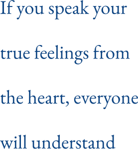
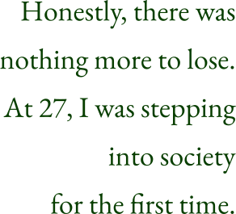
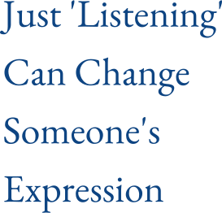
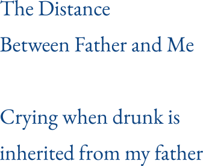
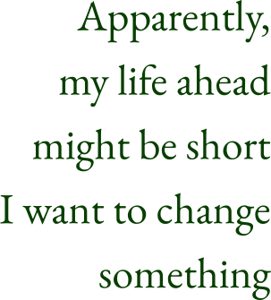

Story #01
Junji's Story
From Honors Student to NEET（Not in Education, Employment, or Training.）
Story #01-1

I don't have many memories from my childhood, but the ones from fifth and sixth grade in elementary school are quite vivid. Under an educationally passionate teacher, ours was a class where everyone wanted to be a class representative. I took roles like team leader and class committee member, and even led the cheering squad during sports festivals. Originally a shy person, I gradually became comfortable with speaking and performing in front of others.
I wasn't particularly skilled at public speaking, but I felt a need to express my opinions clearly, even to adults, when I had one. Perhaps I knew deep down that if I spoke honestly and boldly from the heart, everyone would understand. This belief still forms the basis of who I am today.
When my younger sister stopped attending school, I was the older brother who didn't need any help from my parents, and during my middle school years, I served as the vice president of the student council. My grades were good, and I was able to attend the school of my choice. I remember receiving feedback from a teacher that I “made no enemies.” Looking back, I really was a model student.
After failing to enter university on my first attempt, I enrolled at Kyoto University. However, my life at university became quite aimless. Living alone for the first time, I enjoyed the freedom of waking up and going to school whenever I wanted.
But, in reality, it was painful.
Coming from the countryside of Nagasaki, I found it hard to fit in among many locals speaking Kansai dialect and natives of Kyoto. I had chosen my department based on its high academic reputation, which led me away from my original interest in physics. Moreover, the university classes were challenging, and I struggled to keep up. Eventually, I couldn't earn enough credits, stopped attending university, and became too fearful to go outside, continuing life as a NEET. During those times, as September and March approached—when grades were released and my retention was confirmed—I always felt deeply depressed.
As I repeated years at university, my close friends from my hometown graduated and moved on to the next stages of their lives. I stopped meeting people, became isolated from society, and found a sense of belonging in online gaming. My active hours shifted to match the late-night internet package of the time, from 11 PM to 8 AM, leading to a nocturnal, reclusive lifestyle.
During this period, feeling that I provided no value to society, I constantly thought about how I would end my life if I dropped out of university.
To the Outside World
Story #01-2
One day, feeling desperate for money to live, I reached out to a friend from high school. This led to my encounter with "Yumemi Inc.," a company in its founding phase. I had no experience in programming, but I worked desperately. The job was enjoyable and it gave me confidence that I could make a living as an engineer in the future.
However, at one point, I felt a strong urge to quit.
There wasn't a specific reason, like something unpleasant happening. It was just the long hours, the tense atmosphere before delivery of materials, and a vague feeling of being consumed. I think there were doubts about whether this was the right path for me, but at the time, I couldn't talk to anyone and ended up just stopping going to the company without notifying anyone.

From there, I reverted to a reclusive lifestyle for a while, and the deadline to remain enrolled in university as an 8th-year student was approaching. Until then, I had been deceiving my parents, but when I told them "I am quitting university," the words my mother returned, "I wonder if I raised you wrong," are unforgettable.
When I thought about what to do next after dropping out of university, the first thing that came to mind was "Yumemi Inc.," where I had worked part-time. I am very grateful that they welcomed me back, saying, "It's been a few years, hasn't it?" after I apologized for not keeping in touch.
Honestly, I have nothing more to lose.
At 27 years old, I will be entering society for the first time.
Encounter with Coaching
Story #01-3

After joining "Yumemi," I remember working frantically. I was obsessed with how to increase my salary and how to climb higher than anyone else. I would cut off people I thought were incompetent and team up with those who could perform, always striving to get ahead. I felt I had started late in society and needed to make a comeback, even if it meant stepping on others.
That's why I wanted to work with people who could bring out their Will and achieve results on their own. Conversely, I disliked people who didn't try hard on their own and always asked others for help.
It was during team management that I encountered coaching.
When I took the foundational coaching course at CTI, I was struck by the power of 'listening'. Just listening, yet it changed the expressions of others. After completing the course, when a team member told me, "I feel like I'm being listened to," it felt like a new door had opened.
I used to always have expectations of my team members, but I began to notice and enjoy being curious about "what others are thinking" and "what they want to do."
I later realized that even during my NEET period, when I was isolated from friends, there was a friend who kept sending me messages. He was the captain of the archery club in high school, and when I was re-entering society, he warmly welcomed me back, saying, "What have you been doing all this time!"
Maybe his presence prevented me from being completely cut off from society. Just being there can be a salvation. His way of being felt akin to that of a coach.
Drinking, Friends, Father, and Me
Story #01-4
Friends and Me
I like drinking. More accurately, perhaps it would be better to say that I like places where I can experience the "personality" of the person in front of me through drinking.
There is a drinking buddy who introduced me to the joys of alcohol. The first time we went to Okinawa together, we were taken by a local friend to a bar frequented only by locals, where we brought and drank liquor from my hometown, Nagasaki. We talked about "Okinawan history," "Nagasaki and the atomic bomb," "what it means to live," and after about an hour, we, who had just met, were sharing tears and toasting each other.
Of course, these connections could possibly be made without alcohol. However, I think I just really enjoy feeling a connection with someone while sipping good alcohol and nibbling on delicious food.
Speaking of which, the friend who was the captain of the archery club is now thriving as a bar owner. I feel like places that serve alcohol have somehow created various connections with others.

Father and Me
I don't recall having many conversations with my father since I was a child.
We were both naturally quiet, and his daily routine of leaving the house at 6 am and going to bed at 10 pm didn't help in making our interactions frequent. I never felt a particular estrangement from him, I guess this was just the distance between us, father and son.
Even after leaving Nagasaki, our relationship didn't change, but during a New Year's return to Nagasaki, I saw my father get emotional and cry over drinks. I couldn't hear what was being discussed, but it appears that getting teary when drunk is something I inherited from him.
Signs from the Body
Story #01-5

In my mid-thirties, a health check-up diagnosed me with abnormalities. "You have high blood pressure and diabetes," they said. Further tests also revealed arteriosclerosis. My doctor told me that if I continued this way, I would face serious consequences.
At this time, my lifestyle was completely out of control. I ate out almost exclusively, mainly consuming things like ramen and pizza. My home was filled with garbage bags from convenience store bento boxes (which eventually led to my home becoming a garbage house, a situation that didn't resolve until I got married). Compared to my twenties, I had gained nearly 20kg and my body hardly moved at all.
Receiving that diagnosis felt like flipping a switch inside me. "Apparently, my life ahead might be short. I want to change something." That's when I remembered I could advance my learning in coaching.
While deepening my understanding of coaching, what struck me was an experience during process coaching training. "What is unacceptable for you?" When asked this question, an image of my father came to mind. For the first time, I realized that I could not accept my father's aging. From that point, I couldn't stop crying and cried so hard in front of everyone.
Then, I felt as if something that had been blocked was flowing again.
Around that time, I had the opportunity to be appointed as a director of a subsidiary. What kind of commitment could I make? What kind of person did I want to be? What did I want to leave behind in the world? It felt like I was finally turning my attention towards myself.
By the time I completed my training in process coaching, I felt ready to take control of my own life and start focusing on "leadership."